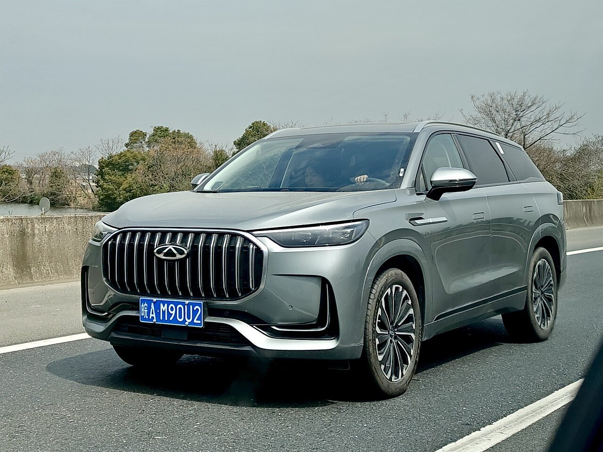
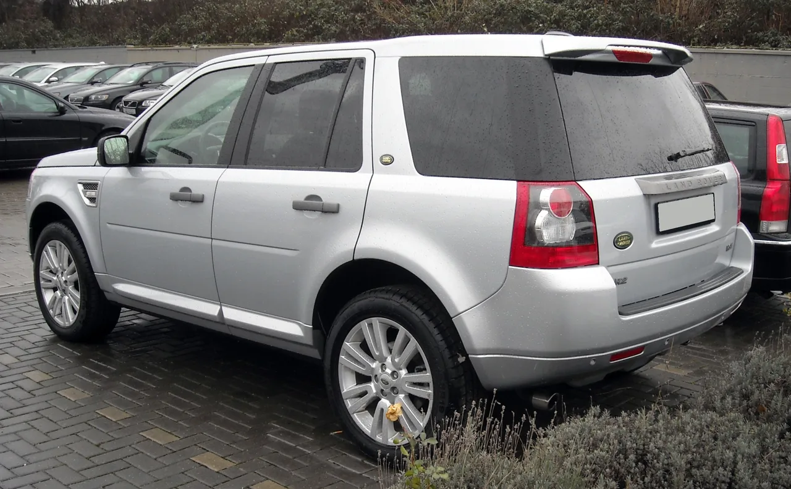

▲ 프리랜더 8의 차체 구조 홍보 페이지에 올라간 것은 니오 ES8의 차체 이미지였다 ⓒ JustAnotherCarDesigner, Wikimedia Commons (CC BY-SA 4.0)
신차 홍보 페이지에는 보통 "차체 구조" 항목이 있습니다. 강판 등급별로 색을 입힌 그림으로, 안전성을 설명하는 자료입니다.
프리랜더 8의 그 페이지에 올라간 그림은 다른 회사 차의 것이었습니다. 니오 ES8이었습니다.
약 한 시간 만에 교체됐지만, 이미 여러 명이 캡처한 뒤였습니다.
1. 왜 한 시간 만에 들켰나
이 사건이 빠르게 확인된 데는 이유가 있습니다.
첫째, 대조가 쉬웠습니다. 니오 ES8의 차체 구조 이미지는 이미 공개된 자료였습니다. 블로거들이 나란히 놓고 비교하자 차체 구조, 패널 윤곽, 디테일의 위치가 그대로 일치했습니다.
둘째, 구조적으로 말이 안 됐습니다. 이것이 결정적이었습니다.
- 프리랜더 8은 EREV다 — 앞쪽에 레인지 익스텐더 엔진이 들어갈 공간이 반드시 필요하다
- 올라간 이미지는 순수 전기차 배치였다 — 앞쪽 공간 구성이 엔진을 전제하지 않는다
즉 차 이름을 몰라도 그림만 보면 이상한 자료였습니다. 자동차 구조를 아는 사람에게는 곧바로 눈에 띄는 문제였습니다.
프리랜더와 니오 모두 공식 입장을 내지 않았습니다.

▲ 프리랜더는 체리와 재규어랜드로버가 함께 소유한 신에너지차 전용 브랜드다
2. 프리랜더 8은 어떤 차인가
정작 차 자체의 성적은 좋습니다.
| 항목 | 수치 |
|---|---|
| 전장 / 휠베이스 | 5,118mm / 3,040mm |
| 구동 | 듀얼모터 사륜 610kW(818마력) |
| 0-100km/h | 4.6초 |
| 배터리 | CATL 60.3kWh |
| 전기 주행거리 | 310km |
| 합산 주행거리 | 1,000km 이상 |
| 아키텍처 | 800V 주행거리 연장형 |
사전판매는 8월 14일 시작됐습니다. 5인승 33만9,900위안(약 5만90달러), 6인승 34만9,900위안입니다.
48시간 만에 1만 대 이상의 사전 예약이 접수됐다고 회사는 밝혔습니다.
800V 아키텍처는 급속 충전에서 유리합니다. 같은 전류로도 전압이 두 배면 전력이 두 배가 되기 때문입니다. 대형 SUV에 60.3kWh라는 비교적 작은 배터리를 쓰면서도 실용성을 확보하는 구성입니다.
3. 프리랜더라는 이름이 돌아온 방식
프리랜더는 원래 랜드로버의 모델명이었습니다. 1997년에 나와 도심형 SUV 시장을 연 차 중 하나였고, 이후 디스커버리 스포츠로 이름이 바뀌며 사라졌습니다.
2026년 3월 31일, 이 이름이 독립 브랜드로 돌아왔습니다. 체리와 재규어랜드로버가 함께 소유하며, 신에너지차 전용으로 운영됩니다.
이런 구조가 늘어나고 있습니다.
- 해외 브랜드 — 이름과 브랜드 자산을 제공한다
- 중국 파트너 — 플랫폼, 배터리, 소프트웨어, 생산을 담당한다
이번 이미지 사고가 상징적인 이유가 여기 있습니다. 브랜드 이름은 영국 것이지만, 차체 구조 자료를 만들고 홍보 페이지를 운영하는 실무는 중국 현지에서 이뤄집니다.
공급망을 공유하는 시장에서 자료가 섞이는 일은 구조적으로 일어날 수 있습니다. 다만 안전성을 설명하는 자료에서 벌어졌다는 점이 문제를 키웠습니다.

▲ 체리는 플랫폼과 생산을, 재규어랜드로버는 이름과 브랜드 자산을 대는 구조다

▲ 프리랜더는 원래 랜드로버의 도심형 SUV 이름이었다. 2026년 3월 독립 브랜드로 돌아왔다
4. 소비자가 확인할 수 있는 것
이 사건에서 실용적으로 건질 것이 있습니다. 홍보 자료의 차체 구조 그림을 볼 때 무엇을 확인해야 하는가입니다.
- ① 색으로 표시된 강판 등급 — 초고장력강의 비율과 위치를 본다. A필러·B필러·문턱에 몰려 있어야 한다.
- ② 파워트레인 배치와 일치하는가 — 이번 건에서 문제가 된 지점이다. 전기차인지 EREV인지에 따라 앞쪽 구조가 다르다.
- ③ 배터리 보호 구조 — 전기차·EREV라면 바닥의 크로스멤버 배치가 측면 충돌 대응의 핵심이다.
- ④ 실제 충돌 시험 결과와 함께 본다 — 구조도는 설명 자료일 뿐이다. 공인 기관의 평가 등급이 최종 근거다.
네 번째가 가장 중요합니다. 차체 구조도는 제조사가 만든 홍보물입니다. 같은 구조라도 용접 품질과 접합 방식에 따라 결과가 달라집니다.
중국 신차의 경우 국내 소비자가 참고할 수 있는 공인 평가 자료가 제한적이라는 점도 감안해야 합니다.

▲ 브랜드 이름은 영국 것이지만 홍보 자료를 만드는 실무는 중국 현지에서 이뤄진다
5. 정리
체리·재규어랜드로버 합작 브랜드 프리랜더가 프리랜더 8의 차체 구조 홍보 페이지에 니오 ES8의 차체 이미지를 올렸다가 약 한 시간 만에 교체했습니다.
8월 18일 저녁 복수의 블로거가 공개된 니오 ES8 이미지와 대조해 발견했습니다. 프리랜더 8은 EREV여서 앞쪽에 엔진 공간이 필요한데, 올라간 이미지는 순수 전기차 배치였다는 점이 결정적이었습니다.
프리랜더 8은 전장 5,118mm, 휠베이스 3,040mm, 듀얼모터 610kW(818마력), 0-100km/h 4.6초이며, 8월 14일 사전판매 시작 후 48시간 내 1만 대 이상을 예약받았습니다. 양사 모두 공식 입장을 내지 않았습니다.